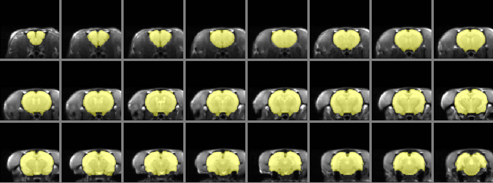
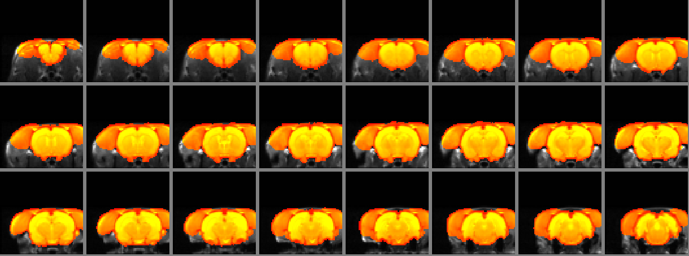

Click the play button to see how iBET performs brain extraction on an example rat brain.
Here's an overlay figure showing how iBET extracted mask looks like (using another example rat brain):

Here's an overlay figure showing how FSL BET extracted mask looks like (on the same example rat brain as above):

Copyright © 2010, Gautam V. Pendse
e-mail: gpendse@mclean.harvard.edu